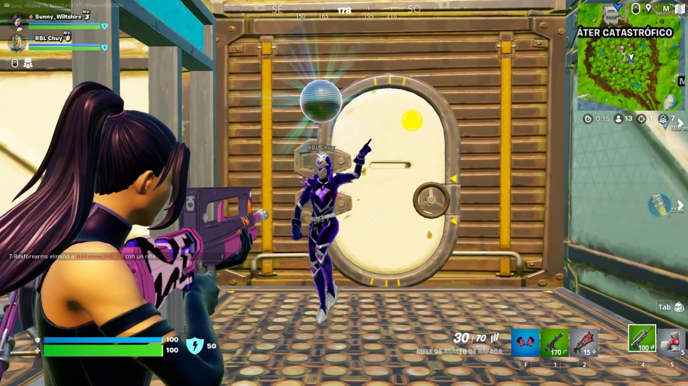
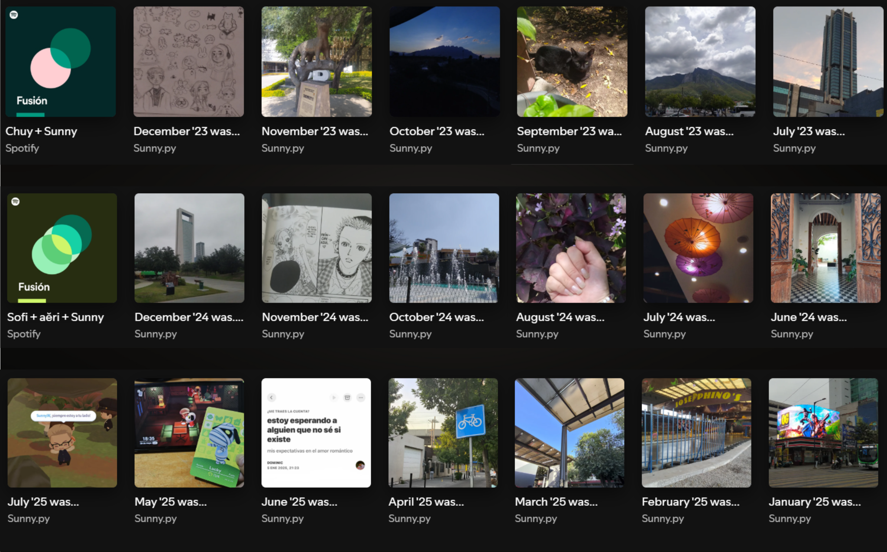
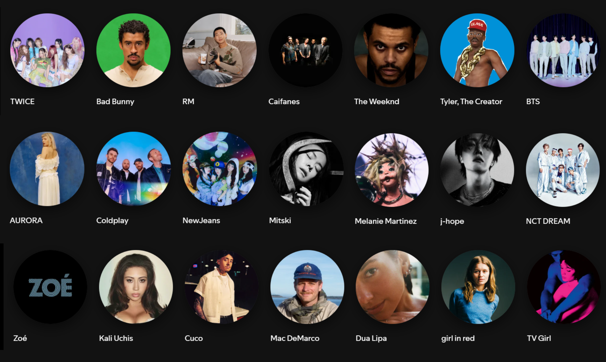

Soy una estudiante de 20 años, originaria de Nuevo León, México. Me llamo Lisset García, mejor conocida como Sunny ☀️
Soy egresada de la Escuela Industrial y Preparatoria Técnica Álvaro Obregón, siendo técnica en programación web. Conozco lenguajes como HTML, CSS (aunque no sean considerados lenguajes), Java, JavaScript, C#, C++, SQL, Python, entre otros.
Actualmente estoy estudiando la carrera de Tecnologías de Información en la Facultad de Contaduría Pública y Administración, cursando el 5.º semestre.
Mis gustos y pasatiempos...
Videojuegos
Mis juegos favoritos son aquellos de novelas gráficas (también conocidas como otomes), cozy games, uno que otro shooter, juegos desarrollados por equipos pequeños (indie RPG games). Algunos ejemplos son:
Fortnite
Animal Crossing
Stardew Valley
Genshin
Doki Doki Literature Club
Undertale
Juegos desarrollados por Charon (RPG's)
Ib, Witch's Heart, Hello Charlotte, The gray garden, Waddanohara, entre otros famosos RPG's de horror indie.
Corazón de Melón y Mystic Messenger (juegos otomes)

Desde que estaba en secundaria, empecé jugando RPG's porque los requisitos de esos juegos no eran muy demandantes para mi computadora. Tiempo después, comencé a jugar en línea tanto en PC como, más recientemente, en consola. He sido nintendera desde pequeña con mi Game Boy, que pasó a una Nintendo 3DS, y actualmente tengo una Switch OLED con la que juego Animal Crossing.
Escritura
Si bien me gustan todas las artes y creo que he probado la mayoría, hay dos que me llenan el alma. Desde secundaria he escrito y me ha encantado poder expresarme a través de historias. Me gusta plasmar mis sentimientos en escritos; últimamente solo he escrito cuando me lo dictan mis emociones. Desde que estaba en la escuela, cuando mi computadora no tenía internet, buscaba cómo entretenerme en aquel aparato. Jugaba en el programa de mi primera Encarta y, cuando descubrí el paquete de Office, fue algo completamente nuevo para mí. Ahí, además de empezar mi amor hacia la escritura, nació una curiosidad por la ofimática, y desde entonces me vi un poco en el área de TI. Empecé escribiendo historias sobre personajes, por lo general de romance. Después las publiqué en una aplicación, tuvieron un poco de fama en la comunidad en la que estaba y les di un final. Más tarde hice historias en mi libreta, poesía, todas ellas inconclusas.
Música
Este es el segundo arte que me llena el alma. La música siempre ha formado parte de mi vida; no toco instrumentos, pero sé cantar. Desde pequeña escuchaba canciones en el estéreo y la radio. Crecí escuchando Caifanes, Luis Miguel, Leo Dan, José José, Camilo Sesto, vallenatos y grupos de rock en español e inglés. Cuando estaba en la escuela, escuchaba covers de canciones japonesas, canciones en inglés y de programas que cantaban en japonés (Vocaloid). En esa época odiaba el reguetón. Fui parte del coro en la escuela y secundaria, y cantar ha sido una pasión para mí desde pequeña. De todas las artes que he practicado, esta es la que más me gusta.
Artistas, canciones y playlists...
Hoy en día tengo playlists mensuales; ver qué me gustaba en aquel entonces es como viajar en el tiempo. Tengo playlists compartidas con amigos, más que nada para comparar gustos. Me encanta enriquecerme con los gustos de otras personas; considero que no hay un género que odie. Por lo general me gusta de todo un poco, aunque la mayoría de mis preferencias son pop (ya sea pop, k-pop o j-pop).

Si bien mis artistas y canciones favoritas siempre cambian, estos son los que más reproduzco actualmente:

Dibujo
Si bien también cuenta como arte, no suelo practicar demasiado el dibujo. He hecho muchísimos dibujos, pero siento que no son más que copias de otros. No he encontrado la manera de mejorar, ya que solo dibujo cuando estoy aburrida. Es más un pasatiempo para mí que algo que quiera desarrollar al punto de practicarlo con regularidad.